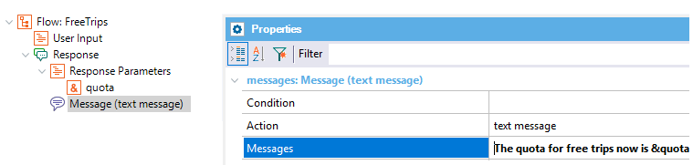

The following API allows managing the Context values of a chatbot conversation. It consists of API methods to get, add, and update the Context values of a specific conversation as well as all the conversations that are active. This is very useful to avoid having to call a service every time you need some values that should be persisted in the conversation. For instance, some information is specific to a conversation, such as a User's account data (name, ID, and other information needed), and should be maintained during the conversation without the need to call any service or prompt the user to enter it. Another example is the information which is global to all conversations. Consider the following example where modifying the context parameters may affect all the chatbots behavior: the human fallback. In this example, it is offer to users the possibility to speak with a person only if there is a connected official to be able to assist them. To avoid calling a service that returns the number of connected officials to find out if it is possible to speak to a person, you can set that amount globally for the context of all conversations. So, when there are changes in the status of those officials, there would be no need to go and query that service. User Context ManagementGetIt allows getting the context value for a specific conversation. &ParameterValue = Chatbot.Context.GetUserContextValue(&Instance, &UserGuid, &Parameter, &Messages) Where
SetSet the context value for a specific conversation. Chatbot.Context.SetUserContextValue(&Instance, &UserGuid, &Parameter, &ParameterValue) Note: SetUserContextValue cannot be used inside a Conversational object. CleanClean all the context content, for a specific conversation. Chatbot.Context.CleanUserContext(&Instance, &UserGuid) ExampleI. The information of the user' profile (i.e: name, address, phone) can be obtained at login. Then, you can set there all the information in the user's context. That information can be retrieved afterwards, when it's needed, for example, in any Conversational Object. II. You can pass information from one Flow to another, by the user's context parameters retrieval. Suppose, for example, that you have a User Input to ask for the User Identification in a Flow. In a Conversational Object of another Flow, you can get that information if it's necessary. &ParameterValue = Chatbot.Context.GetUserContextValue(&Instance, &UserGuid, !"UserIdentification",&Messages) Global Context ManagementGetGet the context value set for all the conversations. &ParameterValue = Chatbot.Context.GetContextValue(&Instance, &Parameter, &Messages) SetSet a context value, valid for all the conversations. Chatbot.Context.SetContextValue(&Instance, &Parameter, &ParameterValue) CleanClean all the context content valid for all conversations. Chatbot.Context.CleanContext(&Instance) ExampleConsider a Flow where the user asks for the availability of free tickets for an activity or a trip. The response to the user is the available quota.  That information is updated through a web service which is called from a Backend, where the following code is executed: &Instance = !"Citizen" Chatbot.Context.SetContextValue(&Instance, !"quota", &value) In the Conversational Object of the Flow, the value of "a is obtained and returned as an out parameter: &Instance = !"Citizen" &Parameter = !"quota" "a = Chatbot.Context.GetContextValue(&Instance, &Parameter, &Messages) <Rules> parm(out:"a); Implementation Details
Global context information is handled in the cache, as well as the user information when a conversation does not yet exist for that user. For example, when the user logs in, and you get the user's profile data, that information can be stored in the context even though the user hasn't started to chat yet. |
| Backlinks | ||
| KB:Chatbot : handover to a human agent | Chatbot Context | |
| Chatbot Generator common errors and solutions | Chatbot Generator resources update | Toc:Chatbots in GeneXus |
| Validation Procedure property |